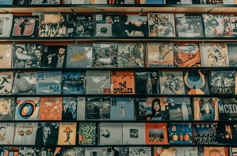
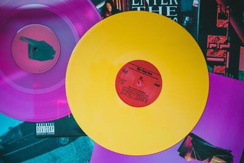

El álbum musical es una colección de grabaciones sonoras publicadas en un disco compacto, vinilo, cinta de audio o cualquier otro formato de reproducción musical. Todos los años se publican miles de álbums pero, solo unos pocos, se vuelven transcendentales.

21
1989
Born This Way
Purpose
Loud